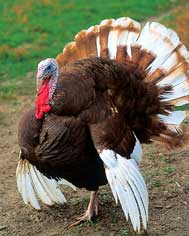

If you're looking for a delicious, sustainably raised turkey thisThanksgiving, your best bet is to purchase one from a local farm.You can enter your location atLocal Harvest orEatWild tofind organic, free-range and grass-fed turkey producers near you.Your local food co-op, farmer's market or natural grocery store mayalso sell sustainably raised turkeys.
In addition to making sure you find a healthy bird that has hadaccess to fresh pasture, you stand a better chance of finding rareheritage breeds by buying locally raised, grass-fed meat. Read moreabout heritage turkey breeds and other pastured poultry in theMother Earth News Archive or atThe Chicken and EggPage.
And check out the United States Department of Agriculture's'Let's Talk Turkey' Web site for detailed information on how toroast fresh and frozen turkeys safely.
|
 The Sand Hill Preservation Center in Calamus, Iowa, focuses on the preservation of heritage poultry breeds, including this Bourbon Red turkey. |
|
|